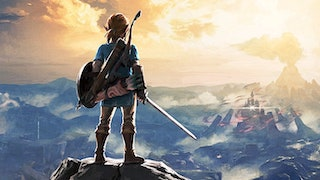

A few things about me!
My Dog Banjo!

My energetic goofball dog Banjo is my best bud. He is a 2 year old Chocolate Labordor. I got him when he was just an 8 week old puppy. Banjo loves to go on walks and hikes, get his belly rubbed, play fetch with his football, and chase the occasional squirrel that shows up in our backyard.
Video Games

One of my favorite ways to pass time is by playing video games. There is no better feeling then starting off on an epic adventure to stop a villain or trying to catch em' all. My favorite games come from Nintendo with Mario and Zelda games being some off my all time greats. I also love playing Naughty Dog's grand tells like The Last of Us Part 1 and 2. You can also catch me on the battlefield in EA's BattleField games or in a FromSoftware dungeon.
Outdoors
I take great delight in being active outdoors. I enjoy taking out my bicycle and cycling around town and on trails. Banjo and I adore going to parks and hiking on their trails going deep into the woods. I spend most of my summer hanging out by the pool. I also take joy in playing and watching sports and you'll be able to find me some days at Geodis Park cheering for my local soccer team Nashville SC.